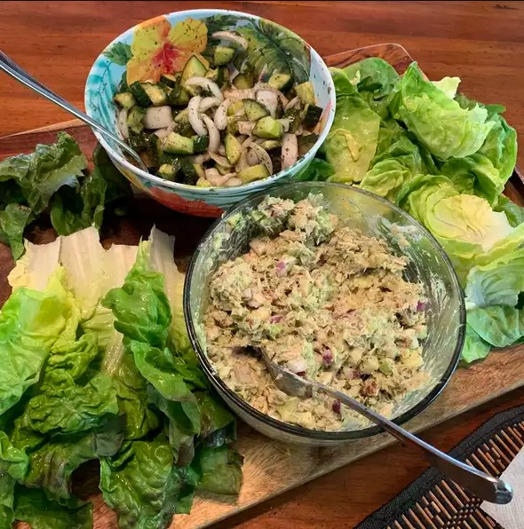

Avocado Tuna Salad
Angelo Maliksi Mendenilla

Description
Looking for a quick and easy tuna salad that's perfect for lunchtime?
This avocado tuna salad is the one for you. It's packed with flavors and
Ingredients that will keep you full. Plus, we have good news for the
mayo-haters out there: This recipe can be made mayo-free thanks to the
creamy avocado.
Ingredients
- 1 riped avocado
- 2 (5 ounce) cans flaked light tuna
- ½ red apple, chopped
- ½ cup red onion, chopped
- ½ cup celery,chopped
- ¼ cup walnuts, chopped, toasted
- 2 tablespoons mayonnaise (Optional)
- 1 tablespoon dried dill weed
- 1 tablespoon pickle juice
- ½ teaspon Dijon mustard
- ¼ teaspon ground cummin
- Salat and pepper to taste
Directions
Step 1
- Cut avocado in half, scoop out the flesh into a large
bowl, and mash avocado with the back of a fork or
potato masher. Add tuna, apple, onion,
celery, toasted walnuts, mayonnaise,
pickle juice, dill, Dijon mustard,
cummin, salt, and pepper; mix well.
Return to main page?